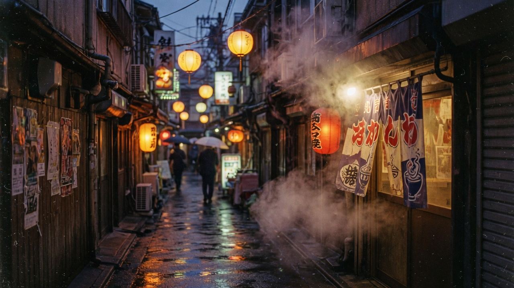
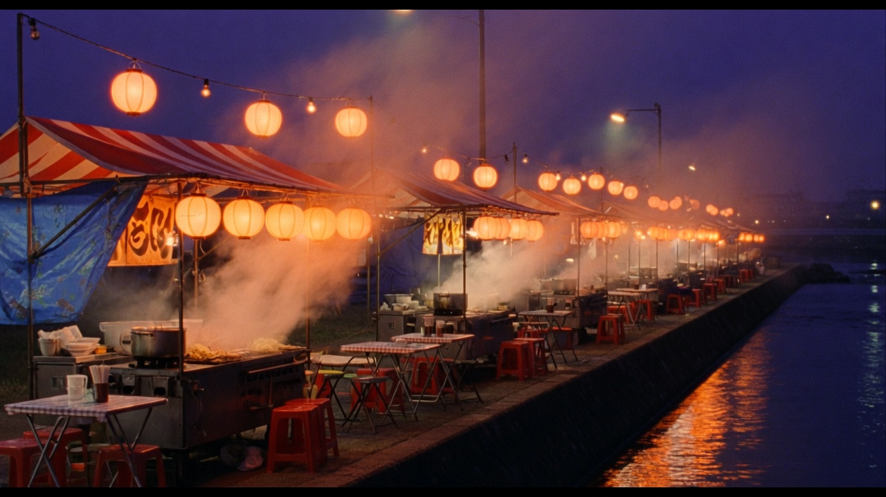
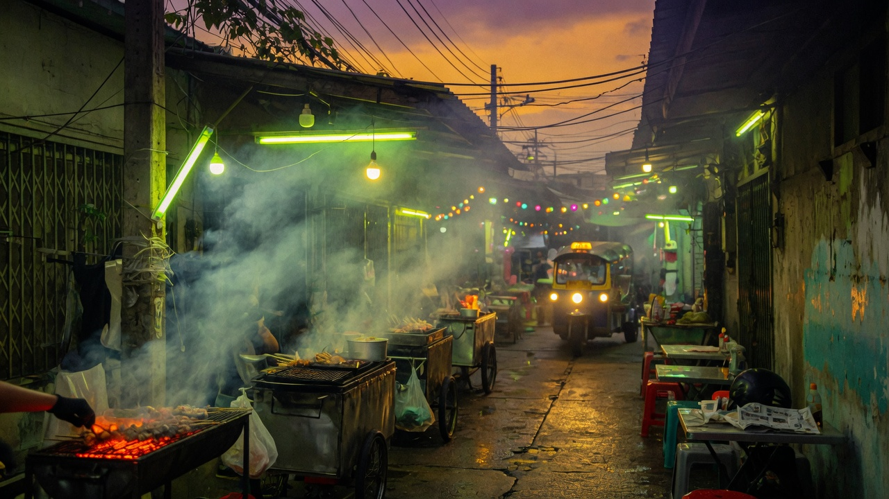

← 시안
01 TWO DOORS · 누구 / 어디
1
2
3
4
5
6
ea
t
ri
p
i
n
입구
곽튜브 · 도쿄
누구
따라갈 채널을 고르면 그 사람의 도시가 열립니다.
곽
곽튜브
도쿄 · 오사카 · 후쿠오카 · 67곳
빠
빠니보틀
파리 · 방콕 · 도쿄 · 48곳
원
원지의하루
타이베이 · 도쿄 · 37곳
츄
츄성훈
오사카 · 후쿠오카 · 31곳
어디
도시를 고르면 그곳을 간 채널들이 한 지도에 모입니다.

도쿄
86곳 · 채널 4
오사카
54곳 · 채널 3

후쿠오카
41곳 · 채널 2

방콕
33곳 · 채널 2
곽튜브 · 도쿄 — 34곳 지도
곽튜브 · 오사카
검색